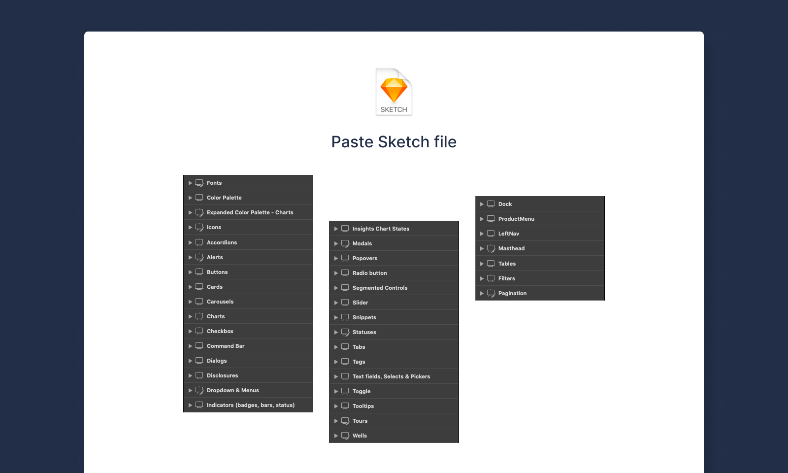

Paste Design System
A design system to build inclusive, delightful Twilio customer experiences.

Context
Paste is known for its accessibility, architecture, and documentation. In 2018, I was one of the two designers who led the efforts to design and build the early version of Paste.
In 2017, Twilio made a significant investment in the design organization, resulting in our team tripling in less than a year. However, our tooling and processes were not scaling properly, leading to bottlenecks and excessive overhead. The entire team relied on a Sketch file that was uploaded to a shared folder every time it was updated.

Goals
The initial plan for Paste was divided into two phases. We needed to deliver something quickly to help teams move faster and test its effectiveness. Thus, we focused on unifying styles and building a pilot Sketch library aligned with code components.
My role
I worked at 50% capacity on this project concurrently with other product-focused projects. My responsibilities included:
- Building the Sketch component library.
- Providing component specifications, guidelines, and assisting developers in building high-quality components.
- Proposing and helping establish processes to remove friction and improve the team's workflow.
Interface inventory
Component library
For the library, I focused on components, starting with those in use and using our codebase as a guide rather than design files, as they proved to mismatch what was in production.
Performance issues
Sketch performed poorly with large files at the time, prompting us to rethink the structure of the library. We decided to split it into separate files based on component types.
Documentation
Upon completing the initial version of the library, I worked on two important tasks:
Adding documentation
Initially in Figma, later expanding to more tailored guidelines on our public website.
Collaborating with engineers on improvements
Not only making components more flexible but also rethinking them in a holistic way and making changes accordingly.
Results
We released the new libraries, followed by several iterations based on feedback from designers and developers. We observed an increase in productivity, especially among designers.
Following this release, we developed a dedicated site to provide documentation and resources to consumers and other stakeholders. We also launched an alpha version of the design system to gather broader feedback and intensify our efforts in adoption.